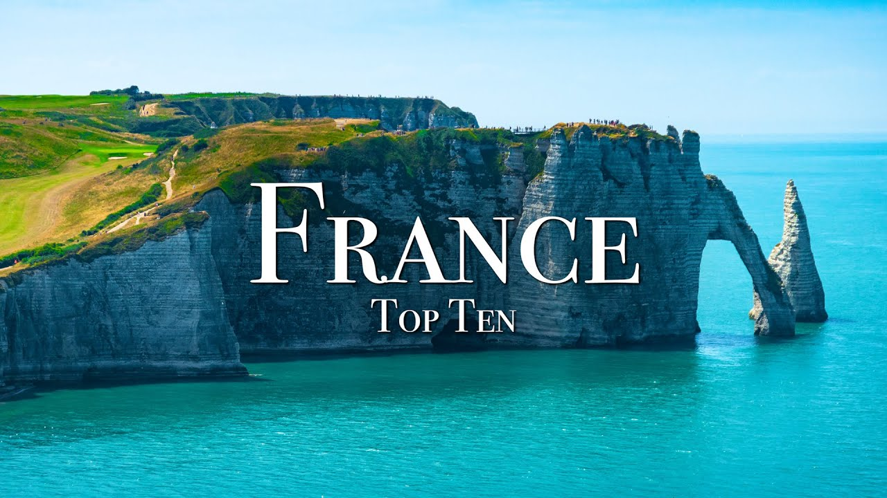

【法国十大必游之地 - 4K 旅游指南】
Summary: Ryan shares his top 10 favorite places in France, from the picturesque Annecy to the stunning French Riviera, highlighting breathtaking scenery, rich history, and unique cultural experiences.
摘要： Ryan 分享了他在法国最喜爱的十大景点，从如画的安纳西到迷人的法国里维埃拉，展示了令人惊叹的风景、丰富的历史和独特的文化体验。

⏱️ Estimated Reading Time: 16 min
What's up guys my name is ryan and i want to show you some of my favorite places in the enchanting country of france so here is my french top 10.
大家好，我是 Ryan，我想带你们看看这个迷人国度——法国的一些我最喜爱的地方，以下是我的法国十大推荐。
france is known all around the world for its endless history and jaw-dropping scenery from the towering french alps to the mediterranean coast of the french riviera france has so much to offer
法国以其悠久的历史和令人惊叹的风景闻名于世，从高耸的阿尔卑斯山到地中海沿岸的法国里维埃拉，法国有太多值得探索的地方。
let's start this video off at the picturesque city of anzi now anzi is located at the foot of the alps it's famous for its medieval old town and it's been nicknamed the venice of the alps thanks to its canals
让我们从如画的安纳西开始，安纳西位于阿尔卑斯山脚下，以其中世纪老城闻名，并因其运河被称为“阿尔卑斯的威尼斯”。
now the city is just absolutely magical but what i love about the region is lake anzi it's known as one of the cleanest lakes in all of europe and i just love the surrounding mountains
这座城市简直充满魔力，但我最爱的是安纳西湖，它是欧洲最干净的湖泊之一，周围的山景也令人陶醉。
i mean i just can't think of a better place to enjoy on a hot summer day
我想不出还有比这更适合在炎炎夏日享受的地方了。
now one of the crowning features of the area is the chateau de menthon saint bernard the castle began construction back in the 13th century and it's just hard to beat the view of this medieval castle
该地区的亮点之一是曼顿圣伯纳德城堡，这座城堡始建于 13 世纪，其壮丽的中世纪景观无与伦比。
after anzi we're gonna head over to the nearby french alps now this is definitely my favorite region in all of france it's home to the incredibly massive mont blanc which is the highest mountain in all the alps at fifteen thousand seven hundred and seventy four feet
离开安纳西后，我们将前往附近的法国阿尔卑斯山区，这里绝对是我在法国最爱的地区，拥有雄伟的勃朗峰，海拔 15,774 英尺，是阿尔卑斯山脉的最高峰。
if you wanna get a close-up view to mont blanc without the hiking you can visit the agi media now special thanks my friend guillaume rugelo for helping me out with footage i'll link his channel in the description below
如果你想近距离欣赏勃朗峰又不想徒步，可以参观南针峰。特别感谢我的朋友 Guillaume Rugelo 提供的素材，我会在描述中附上他的频道链接。
now the aggie doom and d was constructed back in 1955 and when you see it you just can't fathom how they were able to build this on top of a mountain top
南针峰缆车站建于 1955 年，当你亲眼看到它时，简直无法想象他们是如何在山顶建造出这样的工程。
now to get there you can take a 20 minute cable car ride which holds the world record for the highest vertical ascent by a cable car with an elevation gain of 9000 feet
你可以乘坐 20 分钟的缆车前往那里，这条缆车保持着世界最高垂直上升纪录，海拔提升达 9,000 英尺。
and when you reach the top you'll be able to witness one of the best 360 views in all the alps
到达山顶后，你将欣赏到阿尔卑斯山最壮观的 360 度全景之一。
now if you're into hiking you'll have to experience the tour du mont blanc it's a roughly 170 kilometer trek that loops around mont blanc
如果你喜欢徒步，一定要体验环勃朗峰徒步路线，这是一条长约 170 公里的环线。
you'll not only hike in france but you also go through italy and switzerland if you hike at a decent pace you can expect to complete the loop in about 10 days
你不仅会在法国徒步，还会穿越意大利和瑞士。如果速度适中，大约 10 天可以完成全程。
if i can travel to france this summer i definitely want to attempt the tour de mount blanc i mean literally just looks like pure paradise out there
如果今年夏天能去法国，我一定要尝试环勃朗峰徒步，那里简直就是人间天堂。
after the alps we're gonna head over to the alsace region now located in eastern france boarding germany and switzerland the alsace region is famous for its fairytale cities wine country and rich history
离开阿尔卑斯山区后，我们将前往阿尔萨斯地区，这里位于法国东部，与德国和瑞士接壤，以其童话般的城市、葡萄酒产区和丰富的历史闻名。
over the centuries the region has alternated between french and german control and today it represents a mix of those cultures
几个世纪以来，该地区在法国和德国之间几经易手，如今融合了两种文化。
the capital of alsace is strasbourg it's home to the formal seat of the european parliament
阿尔萨斯的首府是斯特拉斯堡，这里是欧洲议会的正式所在地。
another enchanting city in the region is komar komar looks like something straight out of a disney movie the city's old town is lined with timber medieval buildings
该地区另一个迷人的城市是科尔马，科尔马就像直接从迪士尼电影中走出来的一样，老城区遍布木结构的中世纪建筑。
i love the canal that runs throughout the city it just adds to the magic of the place
我喜欢贯穿城市的运河，它为这里增添了更多魔力。
if you want to escape the cities you can experience the alsace wine route it's a 170 kilometer long route that passes through some of france's greatest wine country and picturesque towns
如果你想逃离城市，可以体验阿尔萨斯葡萄酒之路，这条 170 公里长的路线穿过法国最棒的葡萄酒产区和如画的小镇。
one of my favorites is the quaint village a rick kavir it's believed to be the village that inspired the town from beauty and the beast
我最爱的是里克维尔这个古雅的村庄，据说是《美女与野兽》中小镇的灵感来源。
even if you don't drink wine like me it's impossible to not fall in love with this region of france
即使像我一样不喝酒，你也一定会爱上法国的这个地区。
after we're going to france's capital of paris now since the 17th century paris has been europe's major center of finance diplomacy fashion and the arts
接下来我们将前往法国首都巴黎，自 17 世纪以来，巴黎一直是欧洲金融、外交、时尚和艺术的中心。
paris is one of the world's most visited cities and with all its attractions and fascinating history it's easy to see why
巴黎是全球游客最多的城市之一，凭借其众多景点和迷人的历史，原因显而易见。
paris's most recognizable attraction is the eiffel tower it was built in 1889 for the world fair the eiffel tower is 324 meter high which made it the tallest man-made structure in the world until 1930.
巴黎最著名的景点是埃菲尔铁塔，它建于 1889 年的世界博览会，高 324 米，直到 1930 年都是世界上最高的人造建筑。
you can take it over it up there to get incredible 360 panoramic view of all of paris
你可以乘电梯上去，欣赏巴黎壮观的 360 度全景。
another popular attraction is the louvre museum it's the world's largest art museum and it's home to da vinci's mona lisa
另一个热门景点是卢浮宫博物馆，这是世界上最大的艺术博物馆，收藏着达芬奇的《蒙娜丽莎》。
you can also take a drive around the arctic triumph or walk the grounds of the palace of versailles and there's just so much to see in this grand city
你还可以驾车游览凯旋门，或漫步凡尔赛宫的庭院，这座宏伟的城市有太多值得一看的地方。
if you want a road trip outside the capital you can head to france northern coast visit the coastal town of petrito located about three hours outside of paris etc is famous for its white cliffs and rock formations
如果你想在首都周边自驾，可以前往法国北部海岸，参观距离巴黎约三小时车程的海滨小镇埃特勒塔，这里以白色悬崖和岩石地貌闻名。
one of the most well knowns is the fallace de aval arch it has such a unique shape i guess you could say they are the french cousins of old hairy rocks
最著名的是阿瓦尔拱门，它的形状非常独特，可以说是法国版的“老哈里岩”。
while we're still on the coast we're going to visit the magical island of mount st michelle now located one kilometer off the coast of france mozi michel is one of the most magical destinations in all of europe
我们继续沿着海岸线游览，将前往神奇的圣米歇尔山，这座岛屿距离法国海岸一公里，是欧洲最神奇的景点之一。
the island is full of small shops and homes with a monastery perch on the top of the island's highest point
岛上遍布小店和民居，最高处矗立着一座修道院。
the construction of the monastery began in the 10th century and was finished in 1523 due to its strategic position and dangerous changing tides the island remained protected throughout history
修道院始建于 10 世纪，1523 年完工，由于其战略位置和危险的潮汐变化，这座岛屿在历史上一直受到保护。
today mont saint-michel is one of france's most popular tourist destinations if you're ever in northern france or paris you really need to visit this magical island
如今，圣米歇尔山是法国最受欢迎的旅游目的地之一，如果你到访法国北部或巴黎，一定要来这座神奇的岛屿看看。
after we're gonna head to the neighboring region of brittany now located on the northwestern tip of france brittany is full of rugged beaches and countless lighthouses
接下来我们将前往邻近的布列塔尼地区，这里位于法国西北端，遍布崎岖的海滩和无数灯塔。
one thing that is particularly fascinating about brittany is its presence of megalithic monuments there are thousands of stones scattered around the region ranging from ancient tombs to single-standing stones that were arranged by neolithic people over seven thousand years ago which is pretty interesting if you ask me
布列塔尼最迷人的是其巨石遗迹，这里有数千块散落的石头，从古墓到新石器时代人们七千多年前排列的独立巨石，非常有趣。
now aside from the ancient megaliths brittany is home to some stunning coastal towns one of my favorites is le conquer it's an ideal maritime city with a picturesque harbor
除了古老的巨石，布列塔尼还有一些迷人的海滨小镇，我最爱的是勒孔凯，这是一个理想的海滨城市，拥有如画的港口。
one of the highlights of the area is the kermalvan lighthouse image is such a beautiful setting aside from lake honkey brittany is full of hundreds of seaside towns and beaches just waiting to be discovered
该地区的亮点之一是克马尔旺灯塔，景色非常美丽。除了昂凯湖，布列塔尼还有数百个海滨小镇和海滩等待探索。
after let's head over to the medieval fortress of carcassonne now when i imagine medieval europe i don't think there's a better place that exemplifies it better than this fortified city
接下来我们将前往中世纪要塞卡尔卡松，当我想象中世纪的欧洲时，没有比这座 fortified 城市更能体现它的地方了。
located in southern france carcassonne began as a roman fortified hilltop and was given to the visigoths in the 5th century who continued to fortified and build the city throughout the centuries
卡尔卡松位于法国南部，最初是罗马人 fortified 的山顶据点，5 世纪时被交给西哥特人，他们几个世纪来不断加固和建设这座城市。
carcassonne proved to be an impregnable fortress as army after army failed to overtake the protected city today the city consists of 53 towers that are protected by its two outer walls
卡尔卡松被证明是一座坚不可摧的堡垒，一支部队接一支部队都未能攻下这座设防城市。如今，这座城市由 53 座塔楼组成，由两道外墙保护。
it remains as one of europe's greatest medieval gems while we're still on the topic of medieval cities we're gonna head over to ooze now located about two and a half hours from carcassonne usis is a small town with quite the medieval charm
它仍然是欧洲最伟大的中世纪瑰宝之一。继续中世纪城市的话题，我们将前往乌兹，这座小镇距离卡尔卡松约两个半小时车程，充满中世纪魅力。
what i love about usa's is the duke's castle it has such a unique look to it the main tower with its four mini spire gives off medieval vibes
我最爱乌兹的是公爵城堡，它的外观非常独特，主塔配有四个小尖顶，散发着中世纪的气息。
now while you're in usa's you can make this short 15-minute drive to the ancient roman aqueduct point dugard it's over 2000 years old and carried water over 50 kilometers to a roman colony
在乌兹时，你可以驱车 15 分钟前往古罗马引水桥加尔桥，它有 2000 多年历史，曾将水输送到 50 公里外的罗马殖民地。
it's the highest of all roman aqueducts and it's one of the most well preserved another nearby place to visit is avignon it's a stunning french medieval city full of intriguing architecture and history
这是所有罗马引水桥中最高的，也是保存最完好的之一。附近另一个值得一游的地方是阿维尼翁，这是一座迷人的法国中世纪城市，充满有趣的建筑和历史。
after we're gonna head down to southern france to the french riviera now located on the southeast corner of france i have to say that the french riviera is home to some of the world's best coastline
接下来我们将前往法国南部的里维埃拉，位于法国东南角，不得不说这里拥有世界上最好的海岸线之一。
it's the perfect contrast between mountains and the mediterranean ocean one stunning city on the french riviera is monton it's a stunning coastal city sandwich between monaco and the italian border
这里是山脉和地中海的完美结合。里维埃拉上一个迷人的城市是芒通，这座美丽的海滨城市夹在摩纳哥和意大利边境之间。
i just love its ports with the backdrop of the queen mountains and compared to other popular cities on the riviera such as nice or canis this one's not as crowded so it's perfect place to visit to escape the crowds
我特别喜欢它的港口，背景是皇后山脉。与尼斯或戛纳等里维埃拉其他热门城市相比，这里不那么拥挤，是逃离人群的完美去处。
now if you're looking for some medieval vibes you can visit the nearby hilltop village of s the village dates back to the 1300s and when you explore the city you'll feel like you're going back in time
如果你想感受中世纪氛围，可以参观附近的山顶村庄 S，这个村庄的历史可以追溯到 14 世纪，探索时会让你感觉回到了过去。
you can hike to the summit on the town with a fortress on top and you'll get some of the best views of the french riviera
你可以徒步到山顶的堡垒，欣赏里维埃拉最美的景色之一。
well that is it for my france top 10 i mean there's just so many beautiful places that i couldn't cover in this video so i'll have to do a part two let me know where your favorite place is in france in the comments below
以上就是我的法国十大推荐，法国有太多美丽的地方无法在一个视频中涵盖，所以我还会做第二部分。请在评论区告诉我你最喜欢的法国景点。
i also started relaxation channel where i post hour long films with common music to bring some peace and nature new life i did one on friends i think you'll enjoy you can find me on tiktok and instagram shirley.films it's ryan and we will see you later
我还开设了一个放松频道，发布带有舒缓音乐的长视频，带来宁静与自然的新生活。我做了一个关于法国的视频，我想你会喜欢。你可以在 TikTok 和 Instagram @shirley.films 找到我。我是 Ryan，下次见。